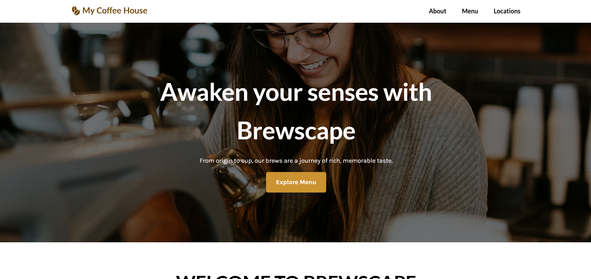
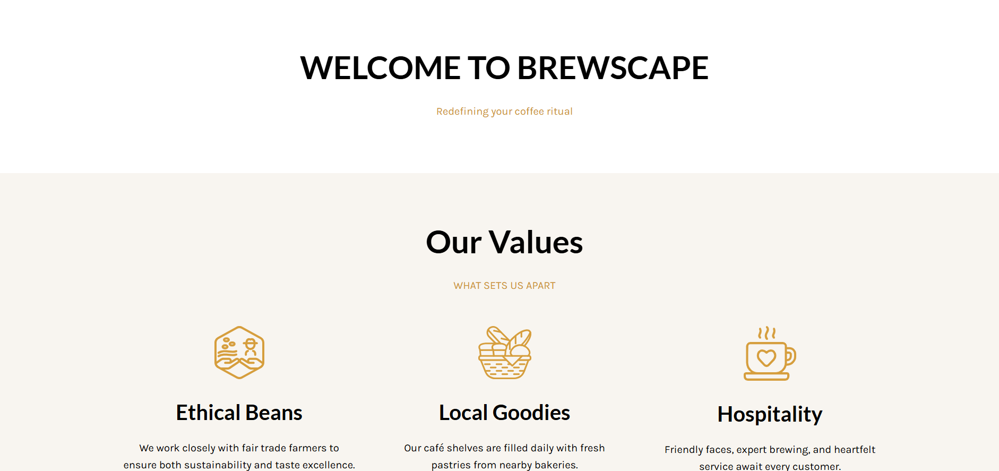
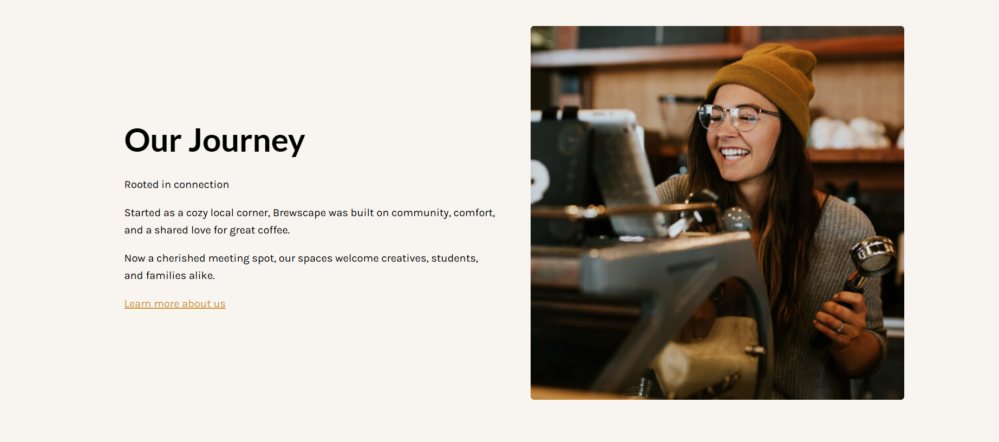
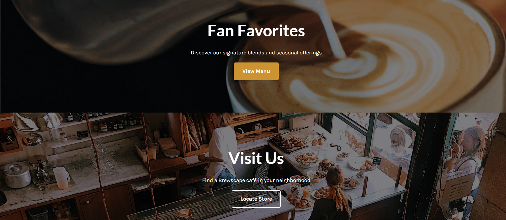

Project Two
Café Website / Brewscape Café
Brewscape Café is a responsive café website concept designed to present a café’s brand, atmosphere, menu highlights, values, and location information in a clean and visually appealing layout.

Process & Reflection
How I approached the project.
Problem
A café website needs to quickly show its brand feeling, menu, story, and location while keeping the layout simple and easy for customers to explore.
Solution
I created a clear website layout with a strong hero image, navigation, call-to-action buttons, values section, journey section, menu promotion, and visit/location section.
Reflection
This project helped me understand how images, spacing, typography, and colour choices can create a strong brand feeling. I also learned how to organize website sections so users can quickly understand the café’s story, values, and services.
Skills Demonstrated
Tools, skills, and contribution.
Project Screenshots
Final visuals and process evidence.


